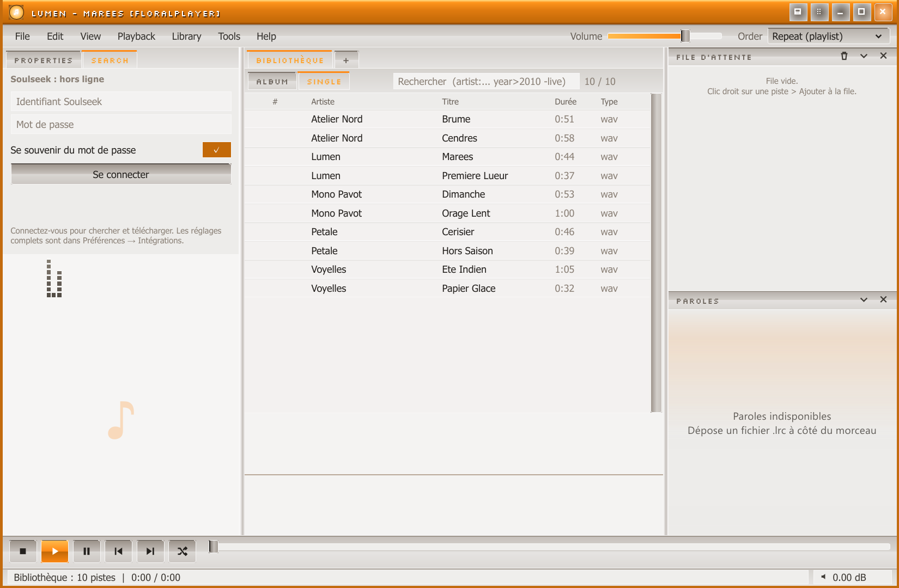
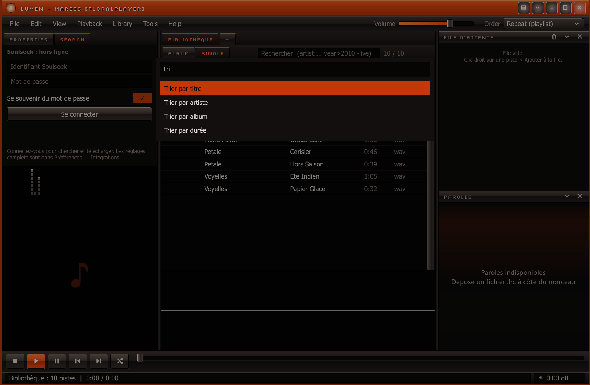

Discord
Présence « écoute » avec titre, artiste, album et temps. Client IPC natif, reconnexion automatique, identifiant d’application configurable.
Nécessite Discord ouvert.
Ce que contient le portage natif Windows, ce qui n’est pas repris de la version Electron et les limites connues de l’ABI des plugins.
L’interface reprend les codes du bureau classique : menus, barres d’outils, listes denses et panneaux redimensionnables.
.lrc synchronisées et notification à chaque changement de piste.


.dll et .rhai sans redémarrer..lrc non synchronisé.genre:, year>2010, rating>=4, plays=0, dur>300, guillemets et exclusions..cue avec pistes virtuelles et enchaînement.Le portage natif utilise rodio et Symphonia. Le traitement est appliqué par le lecteur, pas par une DLL tierce.
Égaliseur
Une interface d’égaliseur existe dans l’application, mais le contrat des plugins n’expose pas les échantillons audio et le traitement n’a pas été vérifié pour cette version. Cette page ne le compte donc pas parmi les fonctions garanties.
Présence « écoute » avec titre, artiste, album et temps. Client IPC natif, reconnexion automatique, identifiant d’application configurable.
Nécessite Discord ouvert.
« En écoute maintenant » au démarrage de piste, puis écoute validée après le seuil min(30, durée/2) secondes. Envoi HTTPS non bloquant.
Jeton utilisateur requis.
Client pair-à-pair natif : connexion, recherche (600 résultats maximum, délai 10 s), tri, filtre, téléchargement, progression et lecture après transfert.
Page web responsive avec jeton de session, état, lecture/pause, précédent/suivant/stop, volume et mute. Désactivée par défaut.
Port 8765, repli 8766–8774. Trafic local non chiffré.
Touches locales fixes et sept actions globales personnalisables : lecture/pause, suivant, précédent, stop, volume +, volume −, mute.
Les touches multimédia restent enregistrées globalement.
Instance unique avec IPC locale, ouverture par arguments, associations « Ouvrir avec » pour 20 extensions dans HKCU, icône et métadonnées de version.
Installation sans droits administrateur.
cdylib et chargés au démarrage.ember_plugin_v1, table PluginV1 statique.declare_plugin! : pas d’unsafe dans le plugin.create → init → tick/event → shutdown → destroy.track_started, played, paused, resumed, stopped.lyrics et visualizers comme drapeaux d’interface.Limites assumées de l’ABI v1
host.panel est journalisé, pas rendu.ui_command n’est envoyé qu’aux plugins intégrés discord et listenbrainz.FLAG_HAS_UI et PluginV1.version ne sont pas lus par l’hôte.ember-theme.json et les réglages d’Apparence.remote n’a pas de source dans le dépôt actuel ; Discord et ListenBrainz sont livrés en DLL.Windows 10/11 64 bits. Le lecteur, les formats et la bibliothèque fonctionnent hors ligne.